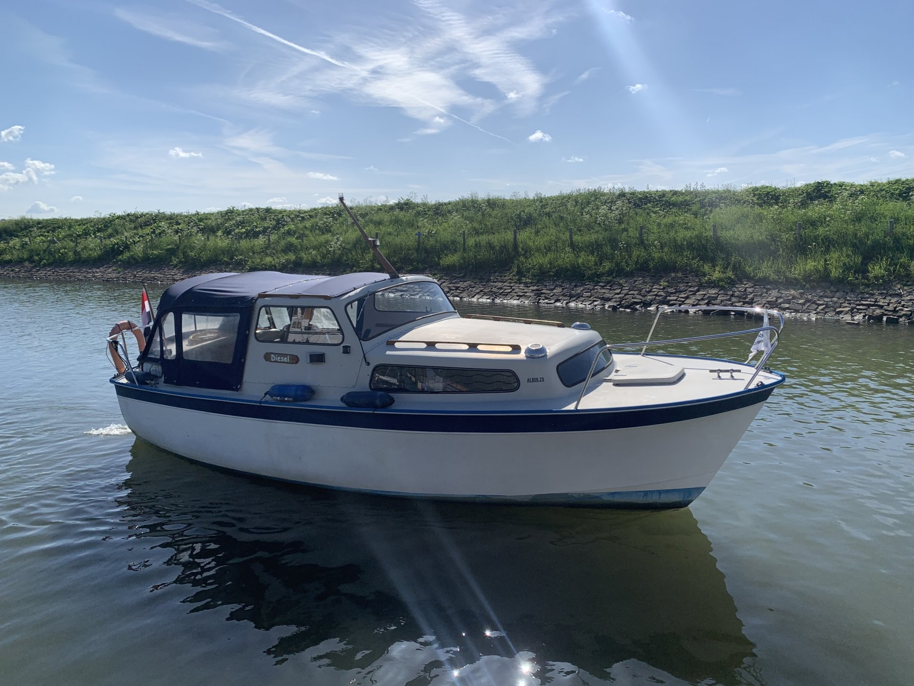

Albin 25 Motor Cruiser
1968–1981
The Albin 25 is a Swedish-built compact displacement cruiser designed by Per Brohäll around a shallow-draft fiberglass hull, protected shaft drive and separate forward and aft sleeping spaces. Factory documentation emphasizes economical operation near 7 knots and a low profile suited to sheltered and inland cruising. Engine and equipment installations changed during the long production run, so individual boats require configuration verification.

- Length
- 25 ft
- Beam
- 8.5 ft
- Draft
- 2.33 ft
- Hull behaviour
- Displacement
- Fuel
- Diesel
- Propulsion
- Shaft
- Engine configuration
- Single Inboard
- Boat family
- Cruiser
- Construction
- Swedish-built fiberglass displacement hull and deck; production details and equipment vary by year
Best for
- Couples who value economy and compact dimensions over speed
- Inland and sheltered coastal cruising
- Owners comfortable maintaining a simple older diesel cruiser
Trade-offs
- Interior headroom and living space are modest by modern standards
- Cruising speed is limited to displacement speeds
- Original engines and fittings can be difficult to source
- Age and owner modifications create wide condition variation
Known concerns
- No model-specific concern has been promoted to B-Scout’s evidence threshold. This does not mean the model has no age-, condition- or hull-specific risks.
Inspection focus
- Confirm engine installation and repower quality
- Inspect deck, cabin-top and window areas for moisture where cored
- Inspect fuel, exhaust, raw-water cooling, shaft and steering systems
- Review wiring, plumbing and owner modifications
Continue researching
Related boat models
26.75 ft · Semi-Displacement
26.75 ft · Semi-Displacement
29.92 ft · Planing
29.92 ft · Planing
31.42 ft · Semi-Displacement
25.42 ft · Semi-Displacement
About this record
B-Scout preserves uncertainty: missing information remains unknown rather than being treated as a negative. Specifications and guidance describe the model record; individual boats can differ by year, equipment, refit and condition.